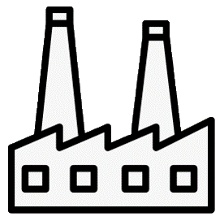
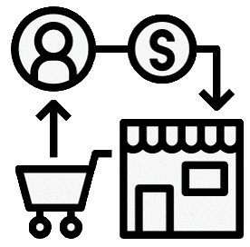

Consultoria em Gestão Empresarial
FOCO EM MELHORIA DE RESULTADOS DE ORGANIZAÇÕES
Industria
Avaliação das principais perdas com relação à produção, materiais, energia, insumos, leiaute, movimentação e recursos humanos. Identificação de causas e oportunidades de melhoria com o menor investimento e tempo de retorno. Planejamento para a obtenção dos resultados.
Serviços
Mapeamento dos principais processos, suas entradas, saídas, insumos e produtos, com a identificação das principais disfunções, desconexões e desperdícios. Planejamento de melhorias para a otimização de processos e a obtenção de resultados.
Comércio
Identificação das principais perdas nos processos comerciais e a avaliação de seus indicadores, visando definir oportunidades de melhoria, as causas das perdas e o planejamento de melhorias para obtenção de resultados.
AVALIAÇÃO
arrow_downwardIDENTIFICAÇÃO DE OPORTUNIDADES
arrow_downwardPLANEJAMENTO
arrow_downwardCAPACITAÇÃO
arrow_downwardIMPLEMENTAÇÃO
arrow_downwardRESULTADOS